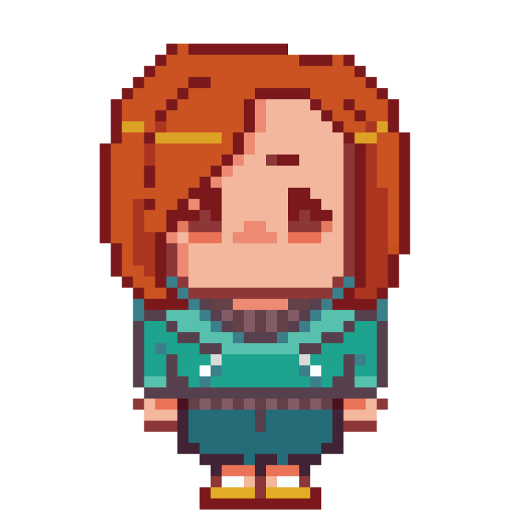

?
Главный герой игры
?
Модель внутри игры
Действия происходят в 2050 году, студенту к этому времени около 30 лет.
Бывший студент МВЕК, который возвращается в колледж, чтобы навестить преподавателей, но застаёт колледж в заброшенном виде...
Характер главного героя будут определять его поступки и решения в течение сюжета: он может стать решительным, пугливым, осторожным, любопытным, а также безразличным.
Имя главного героя - произвольное, и его выбирает в начале сам игрок. Главной мотивацией персонажа, которая поможет в дальнейшем проходить по сюжетной линии, становится стремление восстановить свой любимый колледж и наблюдать за тем, как на глазах у персонажа игрока МВЕУ постепенно восстанавливается и выглядит по-старому: красочно и жизнерадостно.